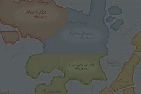

Game Boy Wars Advance 1+2 (Japan) (Virtual Console)
Flash 1M
Cartridge Identity
- Game Code
BGWJ(FamilyBGW)- Header Title
GBWARS1+2- Maker / Revision
01/ rev0- ROM Size
- 16.0 MiB (16,777,216 B)
- Save Media
Flash 1M- SHA-256
47316666c9d9d83ecd60b24e29600160fcf3a5f76855079a5dd4bb3b6ddd8f9f- Engine / SDK Group
comm-009(51 families)
Screenshots


ROM Assets, Compression & Audio
- BIOS Compression
- LZ77 (
0x10): 2,097 streams · RLE (0x30): 52 streams - ROM Pointer Tables
- 340 tables (49 pointing to validated compressed streams)
- SDK Backup Tags
FLASH1M_V102,FLASH1M_V102,FLASH1M_V102
Hardware MMIO Subsystems
ppu_display0x8001ad4,0x8006038
Regional Variants & Revisions (Family BGW)
- Game Boy Wars Advance 1+2 (Japan) (
BGWJ, 16 MiB)